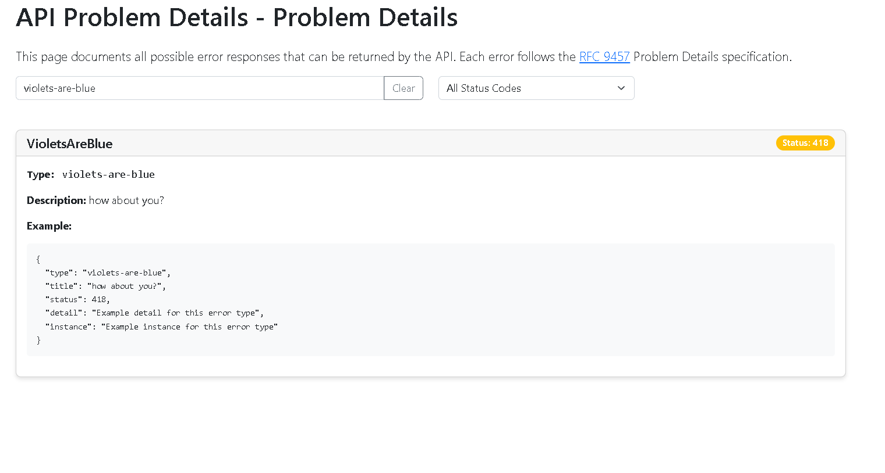

Tutorial
Basics
Routing
When you define a route, you expose a resource through a specific path that clients can request. you then define endpoints on the route to determin what clients can do with the resource.
take url https://lihil.cc/documentation as an example, path /documentation would locate resource documentation.
Define an route in lihil
Endpoint
endpoints always live under a route, an endpoint defines what clients can do with the resource exposed by the route. in a nutshell, an endpoint is the combination of a route and a http method.
Marks
when defining endpoints, you can use marks provide meta data for your params.
Params
Queryfor query param, the default casePathfor path paramHeaderfor header paramBodyfor body paramUsefor dependency
if a param is not declared with param marks, the following rule would apply:
- if the param name appears in route path, it is interpreted as a path param.
- if the param type is a subclass of
msgspec.Struct, it is interpreted as a body param. - if the param type is registered in the route graph, or is a lihil-builtin type, it will be interpered as a dependency and will be resolved by lihil
- otherise, it is interpreted as a query param.
Returns
Jsonfor response with content-typeapplication/json, the default caseTextfor response with content-typetext/plainHTMLfor response with content-typetext/htmlResp[T, 200]for response with status code200
Example:
from lihil import Route, Payload, Use, EventBus
user_route = Route("/users/{user_id}")
class UserUpdate(Payload): ...
class Engine: ...
class Cache: ...
user_route.factory(Cache)
@user_route.put
async def update_user(user_id: str, engine: Use[Engine], cache: Cache, bus: EventBus):
...
In this example:
user_idappears in the route path, so it is a path paramengineis annotated with theUsemark, so it is a dependencycacheis registered in the user_route, so it is also a dependencybusis a lihil-builtin type, it is therefore a dependency as well.
only user_id needs to be provided by the client request, rest will be resolved by lihil.
Param Parsing
if you would like to have a great control on how your params are parsed, you can use CustomDecoder to provide your decoder for the param type.
Config Your App
You can alter app behavior by lihil.config.AppConfig
via config file
This will look for tool.lihil table in the pyproject.toml file
extra/unkown keys will be forbidden to help prevent misconfiging
Note: currently only toml file is supported
build lihil.config.AppConfig instance menually
this is particularly useful if you want to inherit from AppConfig and extend it.
from lihil.config import AppConfig
class MyConfig(AppConfig):
app_name: str
config = MyConfig.from_file("myconfig.toml")
You can override config with command line arguments:
use . to express nested fields
Error Hanlding
- use
route.get(errors=VioletsAreBlue)to declare a endpoint response
class VioletsAreBlue(HTTPException[str]):
"how about you?"
__status__ = 418
@lhl.post(errors=VioletsAreBlue)
async def roses_are_red():
raise VioletsAreBlue("I am a pythonista")
- use
lihil.problems.problem_solveras decorator to register a error handler, error will be parsed as Problem Detail.
from lihil.problems import problem_solver
# NOTE: you can use type union for exc, e.g. UserNotFound | status.NOT_FOUND
@problem_solver
def handle_404(req: Request, exc: Literal[404]):
return Response("resource not found", status_code=404)
A solver that handles a specific exception type (e.g., UserNotFound) takes precedence over a solver that handles the status code (e.g., 404).
Exception-Problem mapping
lihil automatically generates a response and documentation based on your HTTPException,
Here is the generated doc for the endpoint roses_are_red

click url under External documentation tab
we will see the detailed problem page

By default, every endpoint will have at least one response with code 422 for InvalidRequestErrors.
Here is one example response of InvalidRequestErrors.
{
"type_": "invalid-request-errors",
"status": 422,
"title": "Missing",
"detail": [
{
"type": "MissingRequestParam",
"location": "query",
"param": "q",
"message": "Param is Missing"
},
{
"type": "MissingRequestParam",
"location": "query",
"param": "r",
"message": "Param is Missing"
}
],
"instance": "/users"
}
- To alter the creation of the response, use
lihil.problems.problem_solverto register your solver. - To change the documentation, override
DetailBase.__json_example__andDetailBase.__problem_detail__. - To extend the error detail, provide typevar when inheriting
HTTPException[T].
Message System
Lihil has built-in support for both in-process message handling (Beta) and out-of-process message handling (implementing), it is recommended to use EventBus over BackGroundTask for event handling.
There are three primitives for event:
- publish: asynchronous and blocking event handling that shares the same scoep with caller.
- emit: non-blocking asynchrounous event hanlding, has its own scope.
- sink: a thin wrapper around external dependency for data persistence, such as message queue or database.
from lihil import Resp, Route, status
from lihil.plugins.bus import Event, EventBus
from lihil.plugins.testclient import LocalClient
class TodoCreated(Event):
name: str
content: str
async def listen_create(created: TodoCreated, ctx):
assert created.name
assert created.content
async def listen_twice(created: TodoCreated, ctx):
assert created.name
assert created.content
bus_route = Route("/bus", listeners=[listen_create, listen_twice])
@bus_route.post
async def create_todo(name: str, content: str, bus: EventBus) -> Resp[None, status.OK]:
await bus.publish(TodoCreated(name, content))
An event can have multiple event handlers, they will be called in sequence, config your BusTerminal with publisher then inject it to Lihil.
-
An event handler can have as many dependencies as you want, but it should at least contain two params: a sub type of
Event, and a sub type ofMessageContext. -
if a handler is reigstered with a parent event, it will listen to all of its sub event. for example,
-
a handler that listens to
UserEvent, will also be called whenUserCreated(UserEvent),UserDeleted(UserEvent)event is published/emitted. -
you can also publish event during event handling, to do so, declare one of your dependency as
EventBus,
async def listen_create(created: TodoCreated, _: Any, bus: EventBus):
if is_expired(created.created_at):
event = TodoExpired.from_event(created)
await bus.publish(event)
Plugins
Initialization
- init at lifespan
from lihil import Graph
async def lifespan(app: Lihil):
async with YourPlugin() as up:
app.graph.register_singleton(up)
yield
lhl = LIhil(lifespan=lifespan)
use it anywhere with DI
- init at middleware
plugin can be initialized and injected into middleware,
middleware can be bind to differernt route, for example Throttle
# pseudo code
class ThrottleMiddleware:
def __init__(self, app: Ignore[ASGIApp], redis: Redis):
self.app = app
self.redis = redis
async def __call__(self, app):
await self.redis.run_throttle_script
await self.app
lihil accepts a factory to build your middleware, so that you can use di inside the factory, and it will perserve typing info as well. anything callble that requires only one positonal argument can be a factory, which include most ASGI middleware classes.
- use it at your endpoints
DI (dependency injection)
-
you can use
Route.factoryto decorate a dependency class/factory function for the class for your dependency, orRoute.add_nodesto batch add&config many dependencies at once. it is recommended to register dependency where you use them, but you can register them to any route if you want. -
if your factory function is a generator(function that contains
yieldkeyword), it will be treated asscoped, meaning that it will be created before your endpoint function and destoried after. you can use this to achieve business purpose via clients that offeratomic operation, such as database connection. -
you can create function as dependency by
Annotated[Any, use(your_function)]. Do note that you will need to annotate your dependency function return type withIgnorelike this
- if your function is a sync generator, it will be solved within a separate thread.
Data validation
lihil provide you data validation functionalities out of the box using msgspec, you can also use your own customized encoder/decoder for request params and function return.
To use them, annotate your param type with CustomDecoder and your return type with CustomEncoder
from lihil.di import CustomEncoder, CustomDecoder
async def create_user(
user_id: Annotated[MyUserID, CustomDecoder(decode_user_id)]
) -> Annotated[MyUserId, CustomEncoder(encode_user_id)]:
return user_id
Testing
Lihil provide you a test helper LocalClient to call Lihil instance, Route, and endpoint locally,
openapi docs
default ot /docs, change it via AppConfig.oas
problem page
default to /problems, change it via AppConfig.oas